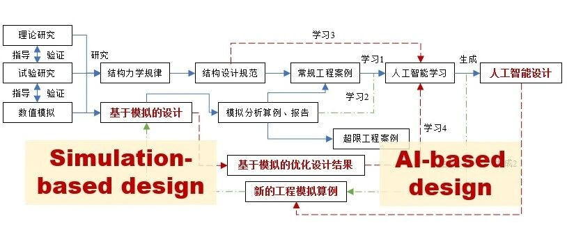

综述论文：从基于模拟到基于人工智能的建筑结构设计方法研究进展

从基于模拟到基于人工智能的建筑结构设计方法研究进展
陆新征，廖文杰，顾栋炼，许镇，郑哲
工程力学, 2025, 42(3): 1-17.
收稿日期：2022-11-11；修改日期：2023-01-05
建筑结构设计行业经历数百年现代化发展，设计理论、方法、技术、规范等内容不断完善。随着新一轮计算机技术的进步，建筑结构设计行业也将进入新的发展阶段。而通过对行业现状的调研，可以发现两个典型现象困扰着行业：（1）对于复杂建筑结构，设计规范难以完全覆盖，导致工程师缺乏设计依据[1-3]；（2）对于常规建筑结构，虽然创造性劳动内容不多，但是重复性工作量大，生产效率亟待提升[4-7]。因此，提升复杂结构的设计能力、提高常规结构的设计效率，已经逐渐成为当前建筑结构设计的重要需求，计算机分析能力的提升、自动化与智能化算法的进步则为解决当前需求提供了新的动力[8-9]。
在过去的30年里，从计算机辅助设计（CAD）到计算机辅助工程（CAE）给所有工程学科带来了前所未有的惊人变化，计算机模拟（Simulation）则成为CAE中的核心要素。广义上的模拟指的是“通过计算模型，来模拟和预测客观世界的各类物理现象（力学、热学、声学等等）和行为。模拟是现代科学、数学、计算机科学和工程知识的重要综合”[8]。它包括对客观世界各类物理规律的认识和理解，对工程对象和环境的数字建模和计算，以及对复杂工程行为的模拟和预测。与其他工程行业不同，土木工程很难进行足尺破坏实验，因此，基于模拟的设计是超规范复杂工程设计的关键手段[1,10]。其中的一个关键问题是：建立可以准确、高效模拟建筑结构在地震、风、火等灾害作用下力学行为的计算模型和算法。
另一方面，从2012年深度学习技术爆发式增长以来，具备多维、多尺度、大数据特征提取和学习能力，并且可在应用阶段实现快速推理的智能算法为工程行业带来了新的动力[11,12]。建筑结构设计逐渐发展成熟，针对常规建筑结构设计已形成了固有工作模式，但却也面临着过于依赖人力、设计人员劳动强度极大却仍旧难以满足需求、且大量技术骨干流失的问题；同时，建筑结构设计行业积累的大量设计资料无法得到有效利用，经验难以传承。常规建筑结构设计面临的设计低效、数据难以学习的问题，则与深度学习算法学习和推理生成的优势高度契合。深度学习方法可以通过对现有结构设计数据的学习，掌握潜在的结构设计规律，从而在设计阶段快速推理生成新的结构设计方案[4,7]。可以预见，基于深度学习的智能设计将是解决常规建筑结构设计的关键技术。其中的一个关键问题是：面向智能算法的建筑结构高效表达、以及构建有效学习建筑结构设计特征并推理设计的智能算法。
需要强调的是，由计算机代替人完成的智能化设计成果，其安全性一直是工程界广泛关注的问题。因此，在智能化设计方法研究过程中，人工智能设计成果都要经历三个方面的检查：（1）相似性：即通过图像对比、图灵测试等手段，保证人工智能设计结果与工程师设计具备高度的相似性[4,13-20]；（2）合规性：即按照规范检验人工智能设计成果，保证人工智能设计成果符合相关规范的要求[21-22]；（3）安全性：即通过各类模拟计算，保证人工智能设计成果的承载力、变形都能满足安全性要求[10]。因此，基于模拟的结构设计所建立的可以准确、高效模拟结构力学行为的计算模型和算法，为结构智能设计成果的安全性检验提供了重要工具，其逻辑关系如图1所示。

图1 基于模拟的设计为人工智能设计提供安全性检验的重要工具
建筑结构的设计方法进步，遵循着从“数字化设计”到“自动化设计”，再从“自动化设计”到“智能化设计”的客观发展趋势。以CAD和BIM为代表的“数字化设计”技术，实现了工程结构的数字化表达，为“自动化设计”和“智能化设计”提供了关键的数字基础。基于工程结构数字模型，“自动化设计”力图实现结构建模、计算、构件设计、性能判别等设计流程的自动化。进而，在专业资料和知识，特别是数字化资料的积累，以及设计结果性能自动判断的基础上，结合先进的AI生成式算法，“智能化设计”实现新结构方案的智能生成。“自动化设计”和“智能化设计”的主要区别在于：“自动化设计”的约束条件和优化方向通常是人为事先设定的[23-24]，计算机不具有自主学习的能力；“智能化设计”则进一步具备了从既有设计资料中自主学习经验并不断学习进步的能力。可见，“数字化设计”是基于模拟的设计和基于人工智能的设计的重要基础；“自动化设计”内涵较为广泛，其中包括的结构建模和分析计算，则是与基于模拟的设计高度对应、同时也是基于人工智能设计的基础；“智能化设计”则与基于人工智能的设计高度对应。
因此，本文将针对基于模拟与基于人工智能设计的关键难题的相关研究进展进行介绍。
1. 基于模拟的设计
美国国家科学基金会（NSF）在2006年发布的专题研究报告《Simulation based Engineering Science—Revolutionizing Engineering Science through Simulation》中指出，随着计算机模拟技术的发展，一个新的工程学科“基于模拟的工程科学（Simulation based Engineering Science）”已经逐步形成，它定义为：“为工程系统模拟提供的科学和数学基础的学科”[8]。这里的工程系统包含电子、机械、土木、生物、化学、材料、航空、核能等从微观纳米到城市级别的系统。NSF报告认为，“基于模拟的工程科学”目前已经在上述各个学科发挥了无可替代的重要作用，其未来的主要发展方向包括：
(1) 多尺度、多物理场问题的求解；
(2) 模拟方法和实测系统的实时集成；
(3) 模型的检验和验证；
(4) 海量数据的处理和可视化；
(5) 以及相应的未来工程理论和实践教育的改革。
“基于模拟的工程科学”包含很多方面内容，对于土木工程的建筑结构设计，“基于模拟的设计”则是目前得到广泛关注的内容，其主要核心则是强调把模拟作为设计阶段的关键技术。因此，构建准确、有效的模拟算法和模型则是其中关键。
1.1 基于模拟的抗震设计
基于模拟的抗震设计是目前发展较为成熟的一个领域。一方面抗震设计是每个建筑工程设计的重点内容，另一方面经常遇到复杂结构超出抗震规范的情况。因此，基于模拟的抗震设计，即基于建筑弹塑性分析的抗震设计，在很多超高、超长、复杂结构中得到了大量应用。
基于模拟的抗震设计，需要解决的关键问题包括合适的地震工况输入，准确高效的结构计算模型和相应的结果判别依据。国内外很多专家在本领域开展了大量的研究工作，获得了很多重要成果。
在地震输入方面，我国抗震规范已经对频遇、设防、罕遇地震动强度水准给出了规定，近年来随着第五代《中国地震动参数区划图》的推广（GB18306-2015）[25]，基于极罕遇地震水准的抗震性能分析也得到关注和应用[26-27]。确定地震强度水准后，就需要输入合适的地震动记录。无论是基于设计反应谱的选波方法，还是基于推荐地震动的选波方法，都已经有了很多研究成果。例如，在《建筑抗倒塌设计标准T/CECS392:2021》的第五章，就对地震动输入做了系列说明，建议用户可以根据设计反应谱选择地震动，也可以从标准附录推荐的地震动目录中挑选。需要说明的是，采用推荐地震动的方案，可以在充分考虑地震动的随机性的基础上，使得弹塑性分析的结果更加具有可比性[26]。
在结构计算模型方面，以纤维梁、分层壳为代表的精细化分析模型已经得到广泛应用，多尺度有限元模拟方法也在工程中得到应用[10,28]。随着高性能构件的不断发展，新的构件计算模型也在不断完善和丰富。
在计算结果判别方面，早期判别方法主要是根据结构的层间位移角对结构的安全性进行简单判别[29-30]。而后，随着性能化抗震设计的发展，基于构件、材料损伤状态的判别方法也得到了大量应用。并且，随着“抗震韧性”理念的推广，以修复时间、修复成本为代表的韧性评价指标也得到应用[31-32]。此外，为了更加综合评价结构的抗震安全性，基于增量动力分析（IDA）的倒塌易损性评价方法[33]，也在科研和工程设计中得到应用[28]。
以某超高层建筑为例介绍基于模拟的抗震设计在实际工程中的应用。该超高层建筑总高度超过500 m[3]，其结构设计远超中国建筑抗震设计规范适用范围[29]，为了保证该结构具有足够的安全储备，同时又保证工程的经济合理，需要系统的采用基于模拟的抗震分析为工程设计提供支持。
在结构设计初期，设计单位提出了图2(a)所示的半支撑方案，即结构下部采用巨型支撑，上部结构则采用巨型框架结构。Lu等[34]针对初始方案开展了基于IDA的结构倒塌易损性分析，通过逐步增加输入地震动的强度，开展结构弹塑性分析，直至结构倒塌。最终可以看到结构的典型倒塌模式如图2(a)所示，由于结构在巨型支撑与巨型框架的过渡位置处受力复杂，从而成为结构发生倒塌的薄弱部位。因此，基于该倒塌模拟分析，设计团队进行了结构设计方案的优化，将半支撑方案更新为全支撑方案，有效提升了结构抗倒塌能力。最终，优化后设计的分析和评价结果如图2(b)所示，结构抗倒塌安全储备提升了近15%，且材料用量降低了11%，有效体现了基于倒塌模拟的结构抗震设计的优势。

图2 某超高层建筑基于倒塌模拟的优化设计案例[34]
1.2 基于模拟的防火设计
消防设计也是建筑设计的重要内容。在建筑设计过程中，因为形态、功能等方面的需求导致超出相关消防规范的情况也经常遇到，往往需要通过性能化防火设计来解决。性能化防火设计的核心环节之一就是进行火场蔓延和人员疏散过程的模拟。
随着近年来计算效率和软件的不断成熟，以计算机模拟的方式对火灾场景和火灾发展过程进行建模分析已成为性能化消防设计的主流方法[35]。针对火灾发展过程，美国国家标准与技术研究院基于计算流体力学方法（Computational Fluid Dynamics, CFD）开发了火灾动力学模拟工具（Fire Dynamics Simulator, FDS）[36]，得到了广泛应用。针对人员疏散逃生模拟，采用社会力模型[37]、网络流模型[38]、元胞自动机模型以及智能体模型等[39]方法用以模拟疏散行为。在有关研究基础上，鉴于基于模拟的防火设计的客观需求，已出现了一批成熟的火灾模拟及疏散逃生软件，包括PathFinder、BuildingEXODUS、SIMULEX、MassMotion、EVACNET4等[39-40]。

(a) 火灾起始和发展（t = 10 s）

(b) 水炮灭火过程（t = 20 s）
图3 某会展中心性能化防火设计案例[41]
以某展览中心为例介绍基于模拟的抗火设计在实际工程中的应用。该展览中心是世界最大悬索结构展厅，其中展厅的长度为164m，宽度128m，最大高度34m。其尺寸已经超过了消防规范的防火分区面积要求。因此，文献[41]开展了基于火灾模拟的防火设计研究，包括火灾发生、烟气蔓延，以及水炮等灭火装置效能的分析。结果表明，由于该工程内部空间比较大，烟气发展到人群行动高度所需时间较久，不进行防火分区也能满足人员安全疏散要求。且消防水炮可以在20s内扑灭火灾，进一步提升了其消防安全性（图3）。该模拟结果为解决建筑功能与消防安全之间的矛盾提供了重要支撑[41-42]。
1.3 基于模拟的抗风设计
由于建筑物的巨大尺寸、钝体特性和复杂形态，CFD在解决建筑抗风计算方面进展较为缓慢，因此基于CFD模拟的建筑抗风设计相对于基于模拟的抗震、抗火设计而言应用案例要少一些。但是，随着CFD方法的发展，特别是大涡模拟（Large Eddy Simulation, LES）[43-47]和高性能并行计算技术的发展，建筑风响应的计算已经越来越精准。Huang等[48]、Zhang等[44]进一步结合LES技术和有限元实现流固耦合分析，求解建筑结构在风荷载作用下的随机动力响应。

图4 基于模拟的抗风设计案例
2021年5月18日，南方某355m的超高层建筑突然发生不明原因振动，引起大厦内外群众恐慌[49]。由于该振动工况复杂，超出了工程设计规范的涵盖范围，因此需要基于模拟的抗风设计提供支撑。本文作者依据设计资料和现场实测数据，进行了大厦周围风环境分析、顶部桅杆动力特性分析和流固耦合分析、大厦整体结构动力时程分析（图4）。具体技术包括：首先根据天气记录和当地三维建筑群模型，完成了大厦振动时刻基于雷诺平均法的区域风环境模拟。而后，由于发生涡振的桅杆形状较为规则，因此采用基于大涡模拟的流固耦合分析方法，模拟了桅杆的涡振过程。最后将桅杆的涡振荷载施加到整体建筑三维有限元模型，得到了不同楼层的振动加速度时程和人员感受结果。从而为分析振动原因和制定处置方案提供了重要参考。
2. 基于人工智能的设计
随着人工智能技术的发展，“人工智能成为科学家的新生产工具，催生科研新范式”[9]。建筑结构设计则亟需智能化转型，寻求可学习既有设计数据的高效智能化设计方法。因此，基于人工智能的设计方法得到广泛关注。
基于人工智能在建筑结构设计中发挥作用的程度高低，本文作者建议可将其划分为L0~L5的层级：
L0层级指结构设计完全由工程师掌握；
L1层级指人工智能可以为结构设计提供参数优化、规范校核等辅助工作，也是目前研究和应用较为成熟内容，例如参数化建模、智能化优化、智能化规范校核等工作；
L2层级指人工智能可代替工程师完成部分结构设计阶段的任务，但是仍需要人类工程师校核设计结果，并完成其他设计阶段任务，例如人工智能完成结构方案设计；
L3层级指针对某些建筑结构对象，人工智能可完成完整的结构设计流程；
L4层级指人工智能可完成大部分不同类型的建筑结构的完整设计任务；
L5层级指人工智能可完成所有建筑结构设计任务。
具体而言，在建筑设计相关领域，深度学习驱动的智能设计方法快速涌现，为建筑结构智能设计的研究提供了参考与支持[50-56]。整个建筑结构设计过程主要分为方案设计、深化设计和施工图设计。其中深化设计和施工图设计已有较丰富的研究，主要以启发式优化算法和深度强化学习为主[23,24,57-63]，相关研究主要处于结构智能化设计的L1层级；相对而言，由于方案设计更加依赖对数据和经验的学习，此前鲜有可以替代人类工程师的方法，而深度学习在建筑结构的方案生成设计中具有很好的应用前景。

图5 建筑结构智能化生成式设计及其深度学习算法基础
建筑结构智能生成式设计主要指：通过深度学习等先进算法，学习既有结构设计图纸数据和经验知识，从而掌握设计能力；训练后的深度神经网络则可根据输入的建筑图智能化生成结构设计图[4,7,13-20,64-67]（图5(a)）。结构方案的智能生成式设计处于结构智能化设计的L2层级。相关深度学习基础算法包括：（1）基于卷积的生成对抗网络（图5(b)）[68]，主要包括：利用卷积网络提取输入图像特征和反卷积网络映射生成对应的输出图像的图像生成器，基于卷积神经网络对生成图像的合理性进行判别的图像判别器。（2）图神经网络算法（图5(c)）[69]。图谱可以通过节点和连接边对拓扑关系进行表征，图神经网络则是通过对节点特征、边特征、以及节点-边之间的连接关系进行特征提取、信息聚合等操作，对图谱数据进行有效的学习和推理。
基于以上两种关键的深度学习算法，针对应用广泛且数据积累较为充分的剪力墙和框架住宅、框架-核心筒办公建筑，本文作者开发了系列智能设计方法，实现建筑结构方案设计中的竖向构件布置、水平构件布置、截面尺寸设计、以及隔震支座参数设计，同时提出了基于相似性和合规性判断的设计结果评价方法，后续将详细介绍。而针对更加复杂的空间结构，由于设计资料和样本较少，相关智能生成方法研究较少。但有部分研究，针对较为简单的空间结构提出了基于可学习智能算法的智能设计方法。例如，赵艳男等[72]基于BP神经网络进行树状空间结构的找形生成，Zhu等[73]基于图嵌入的深度强化学习，对平面桁架结构进行拓扑优化设计。
2.1 竖向构件布置设计
2.1.1 基于图像合成生成对抗网络的剪力墙结构方案设计
Liao等[4]提出了基于图像合成生成对抗网络的剪力墙结构方案设计方法（称为StructGAN），如图6(a)所示。其中，图像合成生成对抗网络模型中，损失函数如式(1)~(3)所示[70]。此外，针对设计图纸上结构构件像素占比小，信息稀疏的特点，为了实现卷积生成对抗网络对结构设计数据的有效学习，提出了建筑结构设计数据特征语义化方法，将矢量化CAD数据转化为神经网络可学习的像素图像，在保留设计信息基础上提升神经网络特征学习能力（图6(b)）。


图6 基于图像合成的剪力墙结构智能设计方法[4]
此外，为了高效且准确的评价大量结构设计的设计质量，提出了工程师经验+计算机视觉的多维度综合评价方法。图7(a)所示为基于工程师专家经验的主观评价方法，通过对工程师设计和StructGAN设计结果进行真假判别，并结合设计结果合理性评分，得到主观相似性评价结果。图7(b)则是基于计算机视觉的设计一致性客观评价，通过对工程师设计与StructGAN设计的剪力墙结构布置像素图进行逐剪力墙轮廓和像素的对比，得到客观的相似性评价结果。

图7 基于相似性的剪力墙结构设计评价方法[4]
2.1.2 融合图像-文本特征的剪力墙结构方案设计
在建筑结构设计中，除了建筑平面布置会对结构设计结果有指导和约束作用外，相关设计条件也会有显著影响，比如抗震设防烈度和结构高度等。而相关设计条件通常以文本形式表达，与建筑图像输入为多模态异构数据。针对建筑图像和设计条件文本耦合指导结构设计的需求，以及建筑结构设计领域样本数量较少的特点，Liao等[14]提出了图像-文本特征融合的生成对抗网络，及其对应的结构设计方法（StructGAN-TXT）。如图8(a)所示，通过分别对图像和文本进行编码，并进一步提取特征，得到尺寸一致的图像和文本特征张量，进一步通过哈达玛积融合二者特征，基于融合的特征由生成器完成结构设计图像的输出。经过多模态数据融合的训练，智能设计方法基本掌握了设计条件与结构设计结果的相关性。其中，生成器的损失函数如式(4)所示[14]。

典型的设计结果如图8(b)所示，针对同一建筑设计图，输入不同的设计条件，也将得到与之对应的结构设计结果。


图8 融合图像-文本特征的剪力墙结构方案智能设计[14]
2.1.3 力学-数据耦合驱动的剪力墙结构方案设计
结构设计满足力学机理是设计合理的关键判别条件之一，但前述基于数据驱动的深度学习方法难以有效学习结构设计中的相关力学机理进而有效控制所设计结构的力学性能。因此，Lu等[13]提出了力学计算增强生成对抗网络及其力学-数据耦合训练方法，StructGAN-PHY（图9(a)），基于训练后智能算法实现剪力墙结构设计。其中，力学性能评估器（PHY-E）则是力学增强实现的关键，是一个基于深度残差网络（ResNet18）的代理模型。力学性能评估器通过对结构设计平面图（输入）-最大层间位移角（标签）数据集的学习，基本掌握力学性能预测的能力，进而输出物理损失值，耦合数据损失值来共同指导生成器学习。其中，耦合学习的损失函数如式(5)所示[13]。


(a) 力学原理增强生成智能设计方法

(b) 力学原理增强智能设计典型案例的分析结果
图9 力学-数据耦合驱动的剪力墙结构方案智能设计[13]
基于该方法完成的结构设计结果，构建对应的整体力学分析模型，并与工程师设计、数据驱动方法设计结果进行对比。层间位移角对比分析结果如图9(b)所示，物理增强的方法设计结果更接近工程师设计，且最大层间位移角变形小于规范限值，而数据驱动方法则有时难以满足规范力学性能要求。
2.1.4 注意力增强的剪力墙方案设计细节优化
常用生成式智能方法是在图像全局建立映射关系，无法模拟实际结构设计中对关键部位重点关注并深化细节设计的过程，导致人工智能设计的结果在细节上难以接近工程师设计。因此，需要在智能算法学习过程中增加对关键细节的学习，Zhao等[15]提出了基于注意力机制增强的生成对抗网络，StructGAN-AE（图10(a)），通过对“电梯周围宜多布置墙体”、“阳台宜少布置墙体”等规则的注意力学习，实现对建筑中电梯、阳台等关键区域设计细节的提升。其中,注意力机制原理详见文献[15]和[71]。训练后智能设计算法的设计结果如图10(b)所示，可以看到，学习了经验规则的剪力墙布置在电梯、阳台等多个设计细节处，相比于常规智能设计方法提升显著。

(a) 基于注意力机制的生成对抗网络（StructGAN-AE）

(b) 经验规则增强剪力墙智能设计
图10 基于注意力机制学习经验规则增强后剪力墙智能设计[15]
2.2 水平构件布置设计
2.2.1 基于像素图生成的结构梁构件布置设计
剪力墙结构设计中，除了竖向剪力墙构件外，水平梁构件的设计同样关键。不同于剪力墙设计，梁布置设计中还需要对建筑空间分布进行考虑，因此，Zhao等[16]提出了建筑构件、空间布置耦合学习的生成对抗网络，及其对应的梁构件设计方法。基于原始建筑设计CAD图纸，构建语义化建筑构件像素图与建筑空间属性图（图11(a)），并通过建筑构件-空间属性耦合学习，掌握从剪力墙建筑结构设计映射生成梁构件布置设计的能力。其中，数据驱动深度学习的损失计算如式(1)~(3)所示。采用训练后的梁构件智能布置设计算法，生成梁构件布置设计，其设计结果与工程师设计高度一致（图11(b)）。

(a) 建筑构件与空间语义化方法

(b) 梁结构构件布置设计
图11 剪力墙结构楼盖设计[16]
2.2.2 基于图谱生成的框架结构梁设计
相比于剪力墙结构设计，框架结构设计更加自由、建筑造型更加丰富，梁柱构件的拓扑关系特征更加显著，而空间分布对设计影响则相对有限，使得前述基于像素图像表征的智能设计方法难以有效应用于框架梁的布置设计。因此，Zhao等[17]提出基于图神经网络的框架梁构件设计方法，将框架梁柱采用图神经网络的节点和边进行表示，通过对节点或边的属性预测，以判断其对应特征是否为梁。图表征方法如图12(a)所示，Zhao等[17]采用节点表征框架柱、以灰色边表征柱间连接关系、以红色和蓝色边分别表征梁和非梁。图神经网络则采用提出的graphSAGE-frame模型，其重要特点则是同时聚合节点和边特征，以学习对应梁柱拓扑关系，特征聚合如式(6)~(7)所示[17]。


(a) 框架结构的图谱表征方法

(b) 基于图神经网络的框架梁设计方法
图12 基于图神经网络的框架梁智能设计[17]
基于图谱数据表征方法与图神经网络边和节点特征聚合方法的完成智能设计GNN模型训练，并进一步应用于框架梁设计中，图12(b)所示为典型复杂框架结构的梁设计结果，AI设计与工程师设计高度一致，准确率超过95%。
2.3 构件尺寸设计
除结构布置外，结构设计中构件截面尺寸设计也极为关键。构件尺寸既受到结构整体设计条件（高度、设防烈度、风荷载等）因素的影响，也受到构件具体位置（边柱、角柱、内柱等）以及和周边结构和空间布置的影响。简单的统计回归公式[13]设计结果误差较大、且难以针对不同构件完成设计。因此，Fei等[18]提出基于设计知识增强的生成对抗网络（StructGAN-KNWL）（图13(a)），及其对应的框架-核心筒结构构件截面尺寸智能设计方法。首先通过对大量图纸和设计条件的学习，掌握了构件尺寸和整体设计条件、构件具体位置、结构平面布置之间的映射关系。进而通过引入尺寸设计对称性、核心筒外墙尺寸同向一致性、内墙尺寸共线一致性、沿高度截面尺寸递减性等设计规则，将其构造为可微的张量算子，保证了设计规则的有效学习。其中，损失函数中典型的柱截面对称性张量算子如式(8)所示，构造方式较为复杂，详见文献[18]。

经过设计规则-数据耦合学习后，知识增强智能设计算法有效完成柱、墙构件截面尺寸设计，设计结果符合相关设计规则（图13(b)）、且对应结构力学性能满足规范要求。

(a) "经验规则" 增强的智能设计方法

(b) “经验规则”增强的智能设计效果
图13 框架-核心筒结构构件截面尺寸设计[18]
2.4 隔震支座设计
除了常规的剪力墙、梁、柱等结构构件的设计外，隔震支座设计需求也不断增加，但由于隔震设计数据极难获取，导致数据驱动的智能设计方法难以实现。

(a) 智能化隔震层参数设计

(b) 智能化隔震设计方法

(c) 典型隔震案例设计结果
图14 力学原理-经验规则指导隔震支座参数生成设计[20]
因此，廖文杰[20]提出力学原理-经验规则指导的自监督隔震支座参数生成设计方法，输入上部剪力墙结构布置，自动生成隔震支座布置设计，再由训练后的智能设计算法生成隔震支座设计参数（图14(a)）。其智能设计方法预先经过了模型训练，其训练是由力学性能评估器、经验规则评价器，结合判别器共同指导生成器学习，实现无真实数据情况下的隔震支座参数智能化设计（图14(b)）。其中，对应的损失函数构造方法则是结合了式(1)~(3)的数据损失、式(5)的物理损失、以及式(8)的规则损失构造方法，详见文献[20]。通过典型隔震设计案例分析，表明该方法能在满足规范限值的前提下，有效降低结构动力响应，提升了结构抗震性能（图14(c)）。
2.5 人工智能设计的应用
基于上述建筑结构智能化生成式设计的算法，可以进一步构建智能化设计系统[19]。用户按照要求输入建筑方案和设计条件后（图15(a)），人工智能就可以完成对应的结构方案设计（图15(b)）。进一步通过参数化建模系统，将结构方案导入PKPM、YJK等工程计算和制图软件，就可以高效完成结构方案验算和截面配筋设计，从而可以在10分钟左右完成从建筑方案到初步施工图的流程，有效提升了设计效率。

(a) 智能设计输入平台

(b) 典型智能设计结果
图15 智能设计设计系统
2.6 智能化抗风与抗火评估
相比于建筑结构抗震设计，建筑结构的抗火、抗风设计的既有设计资料较少，因此，现阶段智能化抗风与抗火设计的研究相对较少。但是，与建筑结构抗火、抗风设计密切相关的智能化性能评估工作则开展较多。例如：Sun等[74]提出基于深度学习和点云技术的建筑及树木环境的风灾评估模型智能化构建方法，Gu等[75]提出深度学习和CFD技术的建筑窗户智能化识别和高效准确评估建筑窗户风灾损失的方法。Naser等[76-78]则提出了基于人工智能的建筑结构构件在火灾下的性能预测方法，并进行了相关综述。未来，既有的智能化性能评估研究也有望应用于建筑结构的抗火、抗风的智能设计中。
3. 讨论与结论
随着计算机计算能力提升、先进模拟方法进步、人工智能算法突破，计算机辅助的建筑结构设计方法也不断发展，实现了“数字化-自动化-智能化”的发展和转型。数字化是自动化与智能化设计的基础，自动化设计是提升效率解放工程师双手的重要助力，而智能化设计则是自动化进一步发展，计算机可自动学习设计规律并推理生成。发展过程中，高效、准确的结构力学行为模拟方法，以及具备学习设计规律和推理能力的智能算法则是重要基础，本文针对基于模拟与人工智能的建筑结构设计方法的研究现状与进展进行了调研与分析。
（1）基于模拟的设计：地震、风、火等灾害作用下结构行为模拟方法的进步，有效推动了基于模拟的设计方法发展，为复杂建筑结构（尤其是超限建筑结构）的设计提供了重要的工具，保证了大量复杂建筑的成功设计与建造；同时也为探索复杂的结构力学行为规律提供了可能性，推动设计优化理论的发展。可见，“基于模拟的设计”是工程人员实现技术创新的关键工具。未来，随着虚拟与真实世界的交互与影响增强，“数字孪生（Digital twin）”也将会成为基于模拟的设计方法的重要方向。
（2）基于人工智能的设计：可抽取数据高维特征并学习潜在规律的深度学习方法，为常规建筑结构设计数据学习和重利用提供了关键驱动。基于卷积的生成对抗网络算法研发，实现了对建筑设计图像特征、设计文本条件指导、力学机理约束、经验规则优化等规律的学习，使得建筑结构的竖向、水平构件布置设计、构件截面和隔震支座设计更加智能化；其对应的智能学习算法的关键理论则如式(1)~(5)和(8)所示，包括了从图像数据损失、到文本数据损失、到物理损失、以及规则损失的构造方法。同时，基于图神经网络算法的开发，有效实现了对结构拓扑特征的学习，实现了框架结构梁构件的智能设计；其对应的智能学习算法的关键理论则如式(6)~(7)所示，通过图谱边和节点特征聚合学习掌握结构设计拓扑关系。在智能化设计方法研究的基础上，开发了对应的智能设计云平台，推动了智能化设计的应用实现。
通过对智能设计研究和应用的综合分析与层级划分，可以看到行业内相对较为成熟的参数化设计、智能优化设计、智能规范校核属于L1层级；目前，方兴未艾的基于深度学习的生成式结构方案智能设计则属于L2层级；未来，对于部分特定的建筑结构，人工智能可以完全代替工程师设计，以达到L3层级；进一步，能够解决大部分结构问题的智能设计属于L4层级；最终，能够智能化设计所有结构的技术属于L5层级。随着近年来人工智能技术的飞速发展，在未来一段时间内，L1层级的结构智能设计技术将大量涌现；L2层级的结构智能设计技术也将取得一定的突破；对于某些特定结构类型，有望实现L3层级的结构智能设计，基本取代人类结构工程师；而更加高级的L4、L5层级结构智能设计还有待相关技术的进一步突破和创新。
（3）基于模拟的设计方法和基于人工智能的设计方法属于智能化结构设计的“一体两面”，二者分别追求建筑结构力学规律的具象化和抽象化，具象化是抽象化的基础，抽象化是具象化的高维度表达。可以预见的是，二者的深度融合可以为建筑结构设计领域的发展带来新一轮的驱动力。然而，虽然目前针对复杂结构的基于模拟的设计方法、以及针对常规结构的基于人工智能的设计方法不断取得进步，但二者的有效结合尚有待更多研究。未来，如图16所示，基于模拟的设计和基于人工智能的设计将进一步融合，具体包括：

图16 基于模拟与基于人工智能的协同设计框架
(a) 人工智能不仅被用来学习既有的设计资料生成新的设计，而且可以进一步用来学习既有的模拟分析算例和报告（即图16中的“学习2”），从而智能化的生成新的工程模拟算例以支持新结构基于模拟的设计（即图16中的绿色点划线），比如可以用人工智能来自动完成结构的消防或抗震性能化设计所需的模拟分析工作；
(b) 人工智能除了可以学习常规工程案例（即图16中的“学习1”），还可以通过自然语言处理（NLP）进一步学习规范条文（即图16中的“学习3”），从而改善设计能力。在此基础上，人工智能可以批量生成结构设计案例，然后自动生成新的工程模拟算例（即图16中的“生成2”），进而开展基于模拟的优化设计，为人工智能学习批量构造大量的学习案例（即图16中的“学习4”），从而有效克服现阶段人工智能设计中学习案例数据数量和质量都受限的问题。从而最终实现智能化设计的“自主学习”和“自主进化”。
参考文献(略)
---End---
智能设计平台网站：
相关研究
学术报告视频
专著
人工智能与机器学习
---结构智能设计
---其他土木工程领域人工智能研究
城市灾害模拟与韧性城市
高性能结构与防倒塌
新论文：抗震&防连续倒塌：一种新型构造措施
长按识别二维码，关注我们的科研动态